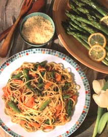
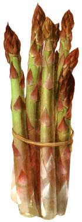

Natural Kitchen
Mother's Kitchen
From potato salad to frittatas, those delicious green stalks can help make some of the spring's best recipes.
Asparagus is one of those strange vegetables-you either love it or you hate it. Perhaps you have that all too common childhood memory of stringy, limp stalks that were so overcooked that they forced you to shun the green stuff ever since. When I was little, my large family didn't have the opportunity to experience asparagus; it was too expensive. And when we did, it was often the gastronomically challenging variety mentioned above. A special treat then, was visiting my grandparents' house during asparagus season, knowing that I was sure to dine on what I thought was a rare, exotic, and slightly scary vegetable.
My grandmother had an asparagus patch behind her garage not too far from her prize winning flower garden. She was a proper grandmother who wore a dress every day of her life, even if she never left the house. That's why it was intriguing to me to see her don old pleated pants to work in the garden. She must have looked like Jean Harlow wearing those pants during the 1930s. That's one of my best memories of my grandmother: gray-haired and garden-gloved, kneeling next to me in the asparagus patch while we scouted the perfect stalls. We'd then lunch on steamed asparagus with plenty of butter (butter wasn't evil back then), cucumber sandwiches, and homemade ginger cookies.
Buying Asparagus: The best asparagus is available sometime in February up until the end of June, with April and May peak months in the Midwest. It's best to buy asparagus only when it's in season and extremely fresh. It must be refrigerated or stored standing in an inch or so of water in the supermarket immediately after harvesting to maintain its flavor and nutrients. The vitamins C, E, and A found in asparagus will diminish rapidly at room temperature. Also, it will lose some of its residual sugars, which impart flavor, and the stalks will lose moisture, making them tough and stringy.
Look for firm stalks without ridges (a sign that the asparagus is ancient). The tips should be bright green, tightly closed, not wilted or gone to seed. The diameter of the stalks is not directly related to quality or tenderness, but stalks that measure about 1/2" in diameter are usually preferable.
Varieties: American asparagus is green while European asparagus is purple-streaked or the prized white asparagus. The white variety is planted underground to prevent the development of chlorophyll, which turns it green. This process yields more fibrous and stronger tasting spears but is more expensive and less nutritious.
Storage: If store bought, cut a little off the ends and refrigerate standing in an inch of water in a deep container. Cover loosely with a plastic bag that doesn't touch the tips. Take care not to store in the back of the refrigerator where the tips will often freeze. Depending largely on its freshness when purchased, the asparagus should keep 3-5 days.
Preparation: Break off the tough bottoms of the stalks at the point at which they break off naturally. Rinse briefly in cold water. Whatever cooking method you choose, cook quickly until tender but still bright green and slightly crisp. Add the skinny stalks last so they won't overcook.
Steaming: Use a vegetable steamer or a minimal amount of simmering water to steam the asparagus in a covered pan for 35 minutes, depending on the thickness. If using for a salad, dunk immediately in cold water for a second to stop the cooking, then refrigerate.
Microwaving: Arrange the spears in a covered pan with all the tips pointing toward the center of the pan. Add 1 tablespoon of water or butter. Microwave 2 minutes, rotate the pan and turn over the stalks, and microwave up to about 2 more minutes. This is not my favorite method of cooking asparagus because it sometimes doesn't cook uniformly.
Roasting: Place the asparagus on a baking or cookie sheet and drizzle lightly with olive oil, seasoning, or herbs. Roast uncovered in a 450°F oven for about 4-5 minutes, turning them over once.
6 small red or white, skinned potatoes, halved and cut into 1" pieces
1 small red pepper, thinly sliced
1/2 red onion, finely chopped
1/2 pound asparagus, tough bottoms removed, and cut on diagonal into 1 " pieces
1/2 cup parsley or chives (or a combination of both), chopped
In a covered saucepan, using a vegetable steamer (or using a small amount of simmering water), steam the potatoes until a fork can be inserted-about 15 minutes. Remove and place potatoes in a bowl with the red pepper and onion, then toss. Steam the asparagus the same way for a few minutes just until tender. Rinse immediately under colder water briefly to stop them from cooking further. Toss into the salad with the parsley and enough vinaigrette (recipe follows) to coat the vegetables. Chill or serve at room temperature.
1 large clove garlic, peeled and smashed
2 small shallots, peeled (optional)
1 1/2 tablespoons Dijon mustard
2 tablespoons balsamic vinegar
2 tablespoons olive oil
1/2 teaspoon grated lemon rind
1/4 cup lemon juice
1/8 teaspoon cayenne pepper
1/2 teaspoon salt
freshly ground pepper
1 tablespoon fresh dill weed (optional)
Mix well in blender.
Try using this low-fat sauce instead of hollandaise sauce to serve over hot asparagus. This dish can be served at room temperature as a salad, but make sure that you slightly undercook the asparagus because it will continue to cook as it cools.
2 large fresh ripe tomatoes (or 5-6 Italian plum tomatoes)
1 teaspoon mild oil
1 clove garlic, minced
1/8 teaspoon jalapeno pepper, minced
2 tablespoons fresh lime juice
1/2 teaspoon sugar
1/4 teaspoon ground cumin
1/4 teaspoon oregano
1/4 teaspoon thyme
dash of salt
1 pound asparagus, trimmed and steamed
Using a long fork or knife, roast the tomatoes one at a time directly over a high gas flame until the skin becomes charred in spots, blistered, and loose. Insert a knife into the core of the tomatoes, one at a time, and roast them over a high gas flame. Cool a few minutes, then peel off the skin, core, and finely chop. Sauté the garlic and pepper in oil on medium-high heat briefly while stirring. Add the tomatoes and the rest of the ingredients. Stir and turn off the heat so that the sauce cooks for not even 30 seconds. Steam the asparagus and serve it topped with a few spoonfuls of sauce.
COLORS
American asparagus is the familiar green, while European is either purple or white.
1 pound fresh asparagus, cut diagonally into 1 "pieces
1 tablespoon sesame seeds, toasted*
1 teaspoon sesame or walnut oil (or any mild oil)
1 small clove garlic, minced
2 teaspoons rice vinegar (or white wine vinegar)
1 tablespoon tamari (soy sauce)
1 teaspoon sugar
2 teaspoons fresh ginger root-peeled and grated
1 tablespoon sherry or rice wine
1 tablespoon water
few dashes chili oil or cayenne pepper
Sauté the garlic a few seconds. Stir together the rest of the ingredients and pour into the skillet. Add the asparagus and cook for about 2 minutes on medium heat until the asparagus is done but still a little crisp. Serve topped with sesame seeds.
*To toast sesame seeds: Place them in a small heated skillet on medium-high heat. Heat for about one minute, stirring often so they don't burn. Remove from pan immediately when they begin to "smell toasted."
I buy smoked salmon at a local fishery where it's smoked but still moist and not too salty. If you can't get smoked salmon, grill some fresh salmon steaks with leftovers for this simple pasta dish the following day.
4 large cloves garlic, minced
1 tablespoon olive oil
3/4 cup unsalted chicken broth
few dashes cayenne pepper
freshly ground pepper
1 pound asparagus (about 1 1/2 cups), trimmed and cut on the diagonal into 1 " pieces
1/4 cup white wine
1/2 pound smoked salmon, deboned and cut into 1 "pieces
12 ounces linguine
4 cup freshly grated parmesan or romano cheese
1/4 cup parsley, chopped
In a large pot bring water to boil and add linguine. In a skillet sauté the garlic in the oil for about 30 seconds. Add the chicken broth and seasonings and heat until boiling. Add the asparagus and cook on medium to medium-high heat for about 2 minutes until the asparagus is almost done. Add the salmon just long enough to heat it, stirring as little as possible so the salmon will remain in pieces. Drain the linguine and toss linguine, salmon, asparagus mixture, and cheese together in a large bowl. Serve topped with parsley and additional cheese if you so desire.
1 teaspoon butter
8-10 asparagus spears, tough ends removed and cut on the diagonal into 1/2" pieces
2 tablespoons onion, minced, or 2 small shallots, peeled and minced
2 eggs
dash milk
dash cayenne pepper, salt
freshly ground pepper
1 teaspoon mild oil
2 tablespoons freshly grated parmesan or pecorino romano cheese
chives, chopped (optional)
Turn on the oven broiler. In an 8" nonstick skillet sauté the asparagus and onion in 1 teaspoon of butter for a minute or so-just until the asparagus is tender. Remove from the pan. In blender blend the eggs, milk, and seasonings. Heat the oil over medium-high heat until the pan is hot. Pour the egg mixture into the pan, tilting it to evenly coat the bottom. After about 30 seconds, lift up the egg in a few places to let the runny egg out. Reduce heat to medium when the bottom is light brown. Top the eggs with the asparagus and then the parmesan cheese. Be sure to wrap aluminum foil around the pan's handle if it is wooden. Put the pan under the broiler for about 30-60 seconds, watching so that the eggs don't burn. Remove from the broiler and slice in half. Top with chives. Serves 2.
|
 |
 |
|